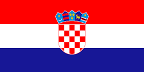
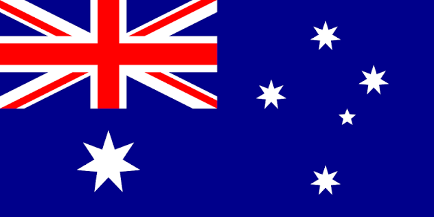
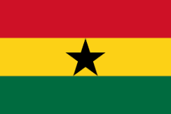

¿De qué se trató el Mundial de 2022?
La Copa Mundial de la FIFA 2022 fue la vigesimosegunda edición del torneo y se disputó en Qatar entre el 20 de noviembre y el 18 de diciembre de 2022. Esta cita marcó múltiples hitos históricos sin precedentes: fue la primera Copa del Mundo celebrada en el mundo árabe y en Oriente Medio, además de ser la primera edición de la historia en disputarse a finales de año (invierno en el hemisferio norte) para evitar las sofocantes temperaturas del verano qatarí. Bajo el lema oficial "Now is All" (El momento es ahora), el torneo ofreció una experiencia compacta debido a la cercanía geográfica entre todas sus sedes.
El campeonato estuvo marcado por evoluciones reglamentarias y tecnológicas de enorme relevancia. Se continuó utilizando el trofeo oficial estrenado en 1974: la Copa Mundial de la FIFA, diseñada por Silvio Gazzaniga. A nivel organizativo, representó la última edición con el formato clásico de 32 selecciones distribuidas en 8 grupos de 4 equipos. En el aspecto reglamentario, se implementó por primera vez la tecnología de fuera de juego semiautomatizado (SAOT) mediante un sistema de cámaras y chips en el balón, y se autorizó de forma definitiva el uso de cinco sustituciones por partido (más una sexta en la prórroga).
En el plano futbolístico, el torneo es considerado uno de los mejores de todos los tiempos. La selección de Argentina, dirigida por Lionel Scaloni, estructuró un equipo de enorme resiliencia táctica e intensidad emocional que fue de menos a más. En la gran final, disputada en el Estadio de Lusail ante 88.966 espectadores, Argentina y Francia protagonizaron la final más dramática de la historia al empatar 3-3 tras una prórroga de infarto. Finalmente, la escuadra albiceleste se impuso por 4-2 en la tanda de penaltis.
Argentina consiguió de esta forma su tercer campeonato mundial, quebrando una sequía de 36 años y coronando la legendaria carrera de su capitán, Lionel Messi.
Informacion que tenes que saber
Info general
- País Anfitrión: Qatar
- Fecha de Inicio:
20 de Noviembre de 2022
(20/11/2022) - Fecha de Finalizacion:
18 de Diciembre de 2022
(18/12/2022) - Duracion: 28 dias
- Organizador: FIFA
- Edicion: XXII
Estadisticas
- Partidos jugados: 64
- Goles anotados: 172 (Récord histórico absoluto)
- Promedio de gol: 2,69 por partido
- Máximo goleador:
Kylian Mbappé
(8 goles) - Final:
Argentina 3-3 (4-2 pen.) Francia
info de la Ciudad
- Ciudades Sede: 5
- Selecciones Participantes: 32
- Estadios Utilizados: 8
- Estadio Principal:
Estadio de Lusail (Lusail) - Asistencia total:
3.404.252 espectadores
Podio
| Posicion | Seleccion | Bandera |
|---|---|---|
| 1º Puesto | Argentina |  |
| 2º Puesto | Francia |  |
| 3º Puesto | Croacia |  |
| 4º Puesto | Marruecos |  |
(Nota: Argentina se consagró campeona del mundo por tercera vez en su historia, tras vencer a Francia por 4-2 en la tanda de penaltis luego de empatar 3-3 en el tiempo reglamentario y extra. El tercer puesto quedó en manos de Croacia, mientras que Marruecos, primera selección africana en llegar a una semifinal, completó el podio en el cuarto lugar).
Historia completa de la Copa Mundial de la FIFA 2022
Qatar obtuvo los derechos de organización en la famosa votación de diciembre de 2010. Para la cita, se edificaron siete estadios completamente nuevos y se remodeló uno, todos ellos equipados con sistemas de refrigeración de última generación alimentados por energía solar.
La fase de grupos regaló el inicio más impredecible de la era moderna. En el grupo C, Arabia Saudita dio el impacto sísmico del torneo al derrotar 2-1 a la Argentina de Messi en el debut, rompiendo un invicto de 36 partidos del cuadro sudamericano. Alemania sufrió una nueva eliminación consecutiva en primera ronda tras caer ante un ordenado Japón, que también venció a España para liderar el grupo E. Por su parte, Bélgica colapsó internamente y se despidió temprano, mientras Marruecos emergía liderando su zona con una solidez defensiva descomunal.
Desarrollo del torneo
La fase de eliminación directa elevó las pulsaciones a niveles cinematográficos. Marruecos se convirtió en la absoluta revelación histórica y el orgullo del continente africano al eliminar consecutivamente a dos gigantes de Europa: a España en octavos de final en la tanda de penaltis (con el recordado penalti picado de Achraf Hakimi) y al Portugal de Cristiano Ronaldo en cuartos de final con un cabezazo de Youssef En-Nesyri, convirtiéndose en el primer equipo africano en llegar a una semifinal de un mundial.
Argentina avanzó superando batallas durísimas, incluyendo los cuartos de final ante los Países Bajos ("Los Cuartos de final de Lusail"), un encuentro de extrema fricción que se decidió en los penaltis gracias a las atajadas de Emiliano "Dibu" Martínez. En semifinales, la albiceleste despachó con autoridad 3-0 a la Croacia de Luka Modrić con una exhibición genial de Messi y Julián Álvarez. Francia, impulsada por un indomable Kylian Mbappé, aplacó el sueño marroquí en la otra semifinal (2-0).
La gran final
La final en Lusail quedó grabada en letras de molde como el partido más espectacular jamás jugado. Argentina dominó el marcador 2-0 con goles de Messi y Ángel Di María durante 80 minutos. Sin embargo, en una ráfaga mágica de 90 segundos, Mbappé anotó un doblete y forzó la prórroga. En el tiempo extra, Messi volvió a adelantar a Argentina y Mbappé empató de penalti para completar su hat-trick (3-3). En el último segundo del minuto 123, el "Dibu" Martínez realizó una atajada milagrosa con su pierna izquierda ante un remate franco de Randal Kolo Muani. En la tanda de penaltis, las definiciones perfectas de los ejecutores argentinos y una nueva atajada de Martínez a Kingsley Coman le entregaron la gloria eterna y la tercera estrella mundialista a la Argentina.
⚽ Pelota Oficial del Mundial 2022

ADIDAS AL RIHLA / AL HILM
El Al Rihla fue el balón oficial de la Copa Mundial de la FIFA Qatar 2022, fabricado por la firma alemana Adidas. Su nombre significa "El viaje" en árabe, inspirado en la cultura, la arquitectura náutica y la bandera de Qatar.
Información General
Nombre: Adidas Al Rihla / Al Hilm
Fabricante: Adidas (Alemania)
Material: Estructura con paneles triangulares y diseño aerodinámico
Torneo: Copa Mundial FIFA Qatar 2022
Características
- Diseño aerodinámico con paneles triangulares inspirados en la cultura, arquitectura náutica y bandera de Qatar.
- Para las semifinales y la gran final se utilizó el modelo Al Hilm ("El sueño"), decorado con tonos dorados texturizados que recordaban a los desiertos de la región.
- Incluyó la tecnología Connected Ball: un sensor de unidad de medición inercial (IMU) de 500 Hz suspendido en el centro de la pelota.
- El sensor enviaba datos de posición en tiempo real a la sala del VAR para detectar de forma instantánea y milimétrica el momento exacto del impacto del balón, optimizando las decisiones de fuera de juego semiautomatizado.
Dato curioso
El Al Hilm se utilizó por primera vez en unas semifinales y una final mundialista, siendo la decisión más controvertida la del "Balón de los Milímetros" en el partido Japón-España, donde el chip interno confirmó que el balón no había salido completamente por la línea de fondo por apenas 1,88 milímetros.
Selecciones Participantes
Europa
 Alemania
Alemania  Bélgica
Bélgica  Dinamarca
Dinamarca  España Francia
España Francia  Gales
Gales  Inglaterra
Inglaterra  Países Bajos
Países Bajos  Polonia
Polonia  Portugal
Portugal  Serbia
Serbia  Suiza
Suiza Debutantes notables
 Canadá
Canadá  Qatar (Anfitrión)
Qatar (Anfitrión) Sudamérica
Argentina  Brasil
Brasil  Ecuador
Ecuador  Uruguay
Uruguay Norteamérica, Centroamérica y Caribe
Canadá  Costa Rica
Costa Rica  Estados Unidos
Estados Unidos  México
México Asia
 Arabia Saudita
Arabia Saudita 
Australia Corea del Sur
Corea del Sur  Irán
Irán  Japón Qatar (Anfitrión)
Japón Qatar (Anfitrión) África
 Camerún
Camerún 
Ghana Marruecos  Senegal
Senegal  Túnez
Túnez
Sedes |
|||
|---|---|---|---|
|
El Mundial de 2022 se disputó en cinco ciudades sede y ocho estadios qataríes, marcando la primera edición de la Copa del Mundo celebrada en el mundo árabe y Oriente Medio. El Estadio de Lusail fue la sede principal del torneo, albergando tanto partidos de fase de grupos como la gran final entre Argentina y Francia ante 88.966 espectadores. En total se jugaron 64 partidos repartidos entre los ocho estadios, con una asistencia total de 3.404.252 espectadores a lo largo de todo el campeonato. (Nota: Fue el primer mundial en implementar la tecnología de fuera de juego semiautomatizado (SAOT) y en autorizar de forma definitiva el uso de cinco sustituciones por partido). |
|||
| Nombre del Estadio | Ciudad | Capacidad aprox. | |
Estadio de Lusail |
Lusail | 88.966 | (Gran Final) |
Estadio Al Bayt |
Jor | 68.895 | |
Estadio Internacional Khalifa |
Doha | 45.857 | |
Estadio Ahmad bin Ali |
Rayán | 45.032 | |
Estadio Education City |
Rayán | 44.667 | |
Estadio Al Thumama |
Doha | 44.400 | |
Estadio Al Janoub |
Al Wakrah | 44.325 | |
Estadio 974 |
Doha | 44.089 | (Construido con 974 contenedores reciclados y desmontado tras el torneo) |
Formato del torneo
El mundial de 2022 ejecutó la estructura de competición tradicional con importantes novedades tecnológicas y reglamentarias:
Primera Fase de Grupos: Las 32 selecciones se organizaron en 8 grupos (del A al H) de 4 equipos cada uno. Avanzaron a la siguiente fase únicamente los dos mejores de cada zona.
Fase de Eliminación Directa: Cruces tradicionales a partido único desde Octavos de Final hasta la Gran Final. En caso de empate al cabo de los 90 minutos reglamentarios, se jugaron dos tiempos extra de 15 minutos cada uno. De persistir la paridad, el ganador se definió mediante tiros desde el punto de penalti.
Innovaciones Reglamentarias: Se implementó por primera vez la tecnología de fuera de juego semiautomatizado (SAOT) y se autorizó de forma definitiva el uso de cinco sustituciones por partido (más una sexta en la prórroga). Fue también la última edición con el formato clásico de 32 equipos, ya que desde 2026 el torneo se amplía a 48 selecciones.
Identidad del Torneo: Diseño, Marketing, Medios y Tecnología
La Revolución de la Inauguración
La ceremonia inaugural tuvo lugar el 20 de noviembre de 2022 en el Estadio Al Bayt, previo al partido de apertura donde Ecuador derrotó 2-0 a Qatar. El show fue una majestuosa narrativa visual que tendió puentes entre la tradición beduina y el fútbol global. Contó con la notable participación del actor estadounidense Morgan Freeman junto al joven qatarí Ghanim Al-Muftah, y el clímax musical fue liderado por Jungkook (miembro de la banda de K-pop BTS) y el cantante local Fahad Al Kubaisi interpretando "Dreamers".
Mascota Oficial: "La'eeb"
Un personaje animado, alegre y flotante que proviene del "mascotiverso". Su forma se inspira en la gutra (el tocado tradicional árabe). Su nombre significa en árabe "jugador habilidoso" y portaba un espíritu de animación juvenil.
Banda Sonora Oficial: Álbum Multi-canción
Por primera vez, la FIFA lanzó una banda sonora completa en lugar de una sola canción. Destacaron éxitos masivos como "Hayya Hayya (Better Together)" (interpretada por Trinidad Cardona, Davido y AISHA), el ritmo urbano de "Arhbo" (por Ozuna y Gims) y el hit global de estadios "Tukoh Taka" con Nicki Minaj, Maluma y Myriam Fares.
Balón Oficial: Adidas Al Rihla / Al Hilm
Su nombre Al Rihla significa "El viaje" en árabe, inspirado en la cultura y arquitectura náutica de Qatar. Presentaba un diseño aerodinámico con paneles triangulares. Para las semifinales y la gran final se utilizó el modelo Al Hilm ("El sueño"), con tonos dorados texturizados que recordaban a los desiertos de la región. Incluyó la tecnología Connected Ball, un sensor IMU de 500 Hz suspendido en el centro de la pelota para optimizar las decisiones de fuera de juego semiautomatizado.
El Proceso de Clasificación
Un total de 206 selecciones de las 6 confederaciones de la FIFA compitieron en los procesos de clasificación. El bicampeón de Europa reinante, Italia, volvió a quedar fuera de una Copa del Mundo por segunda edición consecutiva tras caer ante Macedonia del Norte en la repesca continental. Canadá regresó a una fase final tras 36 años de ausencia (desde 1986), mientras Qatar asistió al torneo por primera vez en su historia en calidad de país organizador.
El Legado del Torneo
El certamen dejó un legado transformador: marcó la primera Copa del Mundo disputada en el mundo árabe, introdujo el fuera de juego semiautomatizado, y consagró a Argentina como tricampeona mundial. El récord absoluto de 172 goles anotados y la consagración de Lionel Messi como el mejor jugador en dos Mundiales diferentes quedaron grabados como hitos históricos del certamen.
Resumen del torneo — Copa Mundial de la FIFA 2022
Primera Fase de Grupos
La fase de grupos regaló el inicio más impredecible de la era moderna. Arabia Saudita dio el impacto sísmico del torneo al derrotar 2-1 a la Argentina de Messi en el debut, rompiendo un invicto de 36 partidos del cuadro sudamericano. Alemania sufrió una nueva eliminación consecutiva en primera ronda. Bélgica colapsó internamente, mientras Marruecos emergía liderando su zona con una solidez defensiva descomunal. Japón sorprendió al vencer a España y Alemania en el Grupo E.
Fase de Eliminación Directa
Octavos de Final
Marruecos
0:0 (3:0 pen.)
España
Marruecos eliminó a España en la tanda de penaltis en una de las mayores sorpresas del torneo. El recordado penalti picado de Achraf Hakimi fue el símbolo de la clasificación marroquí.
Argentina
2:1 (4:3 pen.)
Países Bajos
Argentina superó en penaltis a los Países Bajos en uno de los partidos más tensos e intensos del torneo, con las atajadas del "Dibu" Martínez como figura central.
Cuartos de Final
Marruecos
1:0
Portugal
Marruecos eliminó al Portugal de Cristiano Ronaldo con un cabezazo de Youssef En-Nesyri, convirtiéndose en el primer equipo africano en llegar a una semifinal mundialista.
Argentina
2:2 (4:3 pen.)
Países Bajos
Argentina y Países Bajos igualaron 2-2 tras una prórroga de infarto. El "Dibu" Martínez fue providencial en los penaltis para clasificar a la albiceleste.
Semifinales
Semifinal 1
Argentina
3:0
Croacia
Argentina despachó con autoridad a la Croacia de Luka Modrić con una exhibición genial de Messi y Julián Álvarez, quienes fueron las figuras del partido.
Semifinal 2
Francia
2:0
Marruecos
Francia aplacó el sueño marroquí con un contundente 2-0, impulsada por un indomable Kylian Mbappé, alcanzando su segunda final mundial consecutiva.
Gran Final
Finalistas
Argentina FranciaFinal
Argentina 3 (4) Francia 3 (2)(Argentina dominó 2-0 con goles de Messi y Di María. Mbappé anotó un doblete en 90 segundos para el 2-2. En la prórroga, Messi adelantó al 3-2 y Mbappé empató de penalti completando su hat-trick. En la tanda, el "Dibu" Martínez fue heroico con sus atajadas para darle la tercera estrella a Argentina.)
Máximos goleadores — Copa Mundial de la FIFA 2022
| Jugador | Goles | Pais |
|---|---|---|
| Kylian Mbappé | 8 | |
| Lionel Messi | 7 | |
| Olivier Giroud | 4 | |
| Julián Álvarez | 4 | |
| Gonçalo Ramos | 3 | |
Máximos Asistidores (Premio a la Creación de Juego) — Copa Mundial de la FIFA 2022
| Jugador | Asistencias | Pais |
|---|---|---|
| Lionel Messi | 3 | |
| Antoine Griezmann | 3 | |
| Bruno Fernandes | 3 | |
| Harry Kane | 3 | |
| Ivan Perišić | 3 |
Autogoles Registrados (Goles en Contra) — Copa Mundial de la FIFA 2022
| Jugador | A favor de | Pais |
|---|---|---|
| Nayef Aguerd | Canadá | |
| Enzo Fernández | Australia (Octavos de Final) | |
| Manuel Neuer 💡 | Costa Rica | |
(Nota: El autogol de Manuel Neuer ante Costa Rica fue adjudicado finalmente al arquero alemán tras desvío de balones)
Equipo estelar de los usuarios (FIFA Fan Dream Team) — Copa Mundial de la FIFA 2022
El once ideal definitivo fue elegido por el voto masivo de los aficionados de todo el mundo en la plataforma oficial de la FIFA, quedando estructurado bajo un esquema 4-3-3.
| Jugador | Posición | Pais |
|---|---|---|
| Emiliano Martínez | Portero | |
| Achraf Hakimi | Defensa | |
| Joško Gvardiol | Defensa | |
| Nicolás Otamendi | Defensa | |
| Theo Hernández | Defensa | |
| Luka Modrić | Mediocampista | |
| Sofyan Amrabat | Mediocampista | |
| Jude Bellingham | Mediocampista | |
| Lionel Messi | Delantero | |
| Kylian Mbappé | Delantero | |
| Julián Álvarez | Delantero | |
Premios Oficiales — Copa Mundial de la FIFA 2022
| Premio | Jugador | Pais |
|---|---|---|
| 🥇 Mejor Jugador (Balón de Oro) | Lionel Messi (Primer jugador en ganar dos veces este premio: 2014 y 2022) | |
| ⚽ Ganador de la Bota de Oro | Kylian Mbappé (8 goles, 2 asistencias) | |
| 🧤 Mejor Portero (Guante de Oro) | Emiliano Martínez | |
| 👶 Mejor Jugador Joven | Enzo Fernández | |
| 🎯 Gol del Torneo | Richarlison (Espectacular pirueta de tijera ante Serbia en Fase de Grupos) | |
| 🤝 Premio Fair Play | Selección de Inglaterra | |
Estadísticas Analíticas Avanzadas: El Índice de Rendimiento de Datos FIFA
Sustituyendo conceptualmente al antiguo formato del Índice Castrol, el Grupo de Estudio Técnico de la FIFA implementó un robusto sistema métrico basado en datos posicionales y algoritmos de inteligencia artificial (pases que rompen líneas, efectividad de presión alta y goles esperados xG).
| Jugador | Puntaje | Pais |
|---|---|---|
| Lionel Messi (Líder del torneo; mayor cantidad de pases clave, oportunidades creadas y faltas recibidas en campo rival) | 9.85 | |
| Kylian Mbappé (Líder en goles esperados, regates individuales exitosos en zona de definición y toques en área penal rival) | 9.80 | |
| Antoine Griezmann (Máximo generador de asistencias esperadas xA y despliegue híbrido de recuperación y ataque) | 9.74 | |
| Luka Modrić | 9.68 | |
| Sofyan Amrabat | 9.62 | |
Controversias de la Copa Mundial de la FIFA 2022
El Mundial de Qatar 2022 estuvo marcado por polémicas que trascendieron el plano estrictamente deportivo y generaron debate global.
-
Derechos Humanos y el Calendario Anómalo
La principal controversia rodeó al país organizador desde su designación. Diversas organizaciones internacionales denunciaron las precarias condiciones laborales de los trabajadores migrantes en la construcción de los estadios, así como las restricciones locales en materia de derechos civiles. El corte abrupto de los calendarios de las ligas de clubes a mitad de temporada provocó además una oleada inusual de jugadores lesionados antes de la cita.
-
La Batalla de Lusail y el Arbitraje de Mateu Lahoz (Cuartos de Final)
El choque de cuartos de final entre Argentina y Países Bajos se convirtió en una auténtica batalla campal. El colegiado español Antonio Mateu Lahoz perdió por completo el control del partido, batiendo un récord histórico al mostrar 17 tarjetas amarillas. Tras la tanda de penaltis, Messi criticó abiertamente el nivel del árbitro en televisión, lo que provocó que Lahoz fuera apartado del resto del torneo.
-
El "Balón de los Milímetros" de Japón (Fase de Grupos)
En el decisivo partido del Grupo E entre Japón y España, Kaoru Mitoma centró un balón raso para que Ao Tanaka anotara el gol del triunfo japonés (2-1), que a la postre eliminaba a Alemania. Aunque en las transmisiones parecía que el balón había salido, el VAR y el chip interno del balón determinaron que la curvatura de la pelota permanecía en la línea por escasos 1,88 milímetros, desatando discusiones globales.
-
Las Sanciones por los Brazaletes "OneLove"
Días antes del inicio, los capitanes de siete selecciones europeas anunciaron que portarían un brazalete con los colores del arcoíris y el lema OneLove en señal de protesta por los derechos de la comunidad LGBTQ+ en Qatar. La FIFA intervino advirtiendo que los jugadores recibirían tarjetas amarillas si salían con el distintivo, lo que provocó que las federaciones dieran marcha atrás. La selección de Alemania respondió tapándose la boca en la foto oficial previa a su debut.
Tabla de Rendimiento y Posiciones Finales
| Posicion | Seleccion | Pts | PJ | PG | PE | PP | GF | GC | Dif | Rendimiento |
|---|---|---|---|---|---|---|---|---|---|---|
| 1 | Argentina |
14 | 7 | 4 | 2 | 1 | 15 | 8 | +7 | 66,7% |
| 2 | Francia |
16 | 7 | 5 | 1 | 1 | 16 | 8 | +8 | 76,2% |
| 3 | Croacia | 10 | 7 | 2 | 4 | 1 | 8 | 7 | +1 | 47,6% |
| 4 | Marruecos |
11 | 7 | 3 | 2 | 2 | 6 | 5 | +1 | 52,4% |
| 5 | Países Bajos |
11 | 5 | 3 | 2 | 0 | 10 | 4 | +6 | 77,3% |
| 6 | Inglaterra |
10 | 5 | 3 | 1 | 1 | 13 | 4 | +9 | 66,7% |
| 7 | Brasil |
10 | 5 | 3 | 1 | 1 | 8 | 3 | +5 | 66,7% |
| 8 | Portugal |
9 | 5 | 3 | 0 | 2 | 12 | 6 | +6 | 60,0% |
| 9 | Japón |
7 | 4 | 2 | 1 | 1 | 5 | 4 | +1 | 58,3% |
| 10 | Senegal |
6 | 4 | 2 | 0 | 2 | 5 | 7 | -2 | 50,0% |
| 11 | Australia | 6 | 4 | 2 | 0 | 2 | 4 | 6 | -2 | 50,0% |
| 12 | Suiza |
6 | 4 | 2 | 0 | 2 | 5 | 9 | -4 | 50,0% |
| 13 | España |
5 | 4 | 1 | 2 | 1 | 9 | 3 | +6 | 41,7% |
| 14 | Estados Unidos |
5 | 4 | 1 | 2 | 1 | 3 | 4 | -1 | 41,7% |
| 15 | Polonia |
4 | 4 | 1 | 1 | 2 | 3 | 5 | -2 | 33,3% |
| 16 | Corea del Sur |
4 | 4 | 1 | 1 | 2 | 5 | 8 | -3 | 33,3% |
| 17 | Alemania |
4 | 3 | 1 | 1 | 1 | 6 | 5 | +1 | 44,4% |
| 18 | Ecuador |
4 | 3 | 1 | 1 | 1 | 4 | 3 | +1 | 44,4% |
| 19 | Camerún |
4 | 3 | 1 | 1 | 1 | 4 | 4 | 0 | 44,4% |
| 20 | Uruguay |
4 | 3 | 1 | 1 | 1 | 2 | 2 | 0 | 44,4% |
| 21 | Túnez |
4 | 3 | 1 | 1 | 1 | 1 | 1 | 0 | 44,4% |
| 22 | México |
4 | 3 | 1 | 1 | 1 | 2 | 3 | -1 | 44,4% |
| 23 | Bélgica |
4 | 3 | 1 | 1 | 1 | 1 | 2 | -1 | 44,4% |
| 24 | Ghana | 3 | 3 | 1 | 0 | 2 | 5 | 7 | -2 | 33,3% |
| 25 | Arabia Saudita |
3 | 3 | 1 | 0 | 2 | 3 | 5 | -2 | 33,3% |
| 26 | Irán |
3 | 3 | 1 | 0 | 2 | 4 | 7 | -3 | 33,3% |
| 27 | Costa Rica |
3 | 3 | 1 | 0 | 2 | 3 | 11 | -8 | 33,3% |
| 28 | Dinamarca |
1 | 3 | 0 | 1 | 2 | 1 | 3 | -2 | 11,1% |
| 29 | Serbia |
1 | 3 | 0 | 1 | 2 | 5 | 8 | -3 | 11,1% |
| 30 | Gales |
1 | 3 | 0 | 1 | 2 | 1 | 6 | -5 | 11,1% |
| 31 | Canadá |
0 | 3 | 0 | 0 | 3 | 2 | 7 | -5 | 0,0% |
| 32 | Catar |
0 | 3 | 0 | 0 | 3 | 1 | 7 | -6 | 0,0% |
- PTS: PUNTOS
- PJ: PARTIDOS JUGADOS
- PG: PARTIDOS GANADOS
- PE: PARTIDOS EMPATADOS
- PP: PARTIDOS PERDIDOS
- GF: GOLES A FAVOR
- GC: GOLES EN CONTRA
- DIF: DIFERENCIA DE GOL
- RENDIMIENTO: BASADA EN LA EFECTIVIDAD DE PARTIDOS (PG, PE, PP)